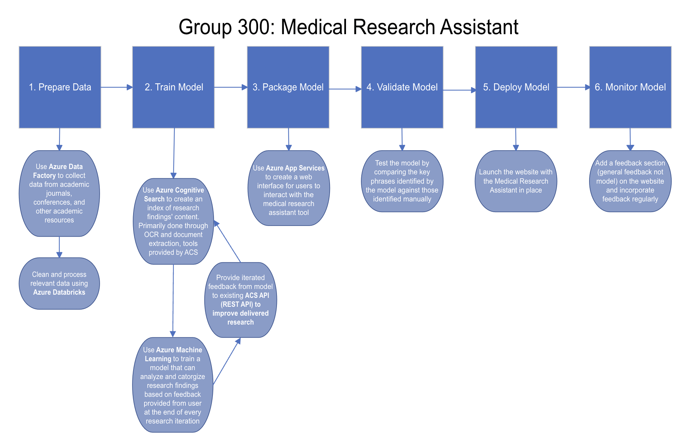

MIRA AI Medical Research Assistant
Company - Microsoft/We Accelerate
Duration - Jun 2023 to Aug 2023
Role - Solution Team Member
Skills - Team Management, Microsoft Azure
In the spring of 2023, I joined We Accelerate and Microsoft as my first co-op. During this experience, I got to expand my knowledge of Microsoft Azure and its Machine learning tools. Furthermore, I got to collaborate with a group of amazing people to create a unique AI solution that simplifies the medical research process for users.

About MIRA
Like the slogan, MIRA is an AI solution that aims to accelerate and simplify medical research processes. More specifically, MIRA is an AI medical research assistant that can process large datasets, determine relevant resources to the user’s research topic and ensure researchers can quickly access any information that is valuable to their research. With a tool like MIRA, users can now navigate through a vast amount of information, with ease and confidence, empowering them to make significant advancements in their research.
About My Role
During my time at Microsoft/We Accelerate as a Team Member; I am actively involved in all aspects of the project development. However, I mainly focused on Solution design and Model Pipeline.
Solution Design
Today there are a vast amount of research resources available for research. However, there is not yet an efficient tool that assists with the precise processing of these data. Therefore, MIRA will be focusing on the following features:
1. Efficiency
The solution will take the form of a chatbot that can quickly output the desired answer to the users. In addition, outputs will be summarized and organized by relevance allowing quicker access to necessary information.
2. Precision of Data
The AI Model will have its own database that consists of all necessary data and is consistently updated, reducing the risk of missing vital information.
Model Pipeline
After finalizing the solution, I used a pipeline wireframe to determine the resources needed to create the AI model. Furthermore, a pipeline wireframe better demonstrates the operational process of the solution.
My Experience
I learnt a lot about Machine learning and the application of Microsoft Azure tool through this experience. My mentor, Moataz Kamel, assisted significantly with creating the pipeline wireframe and making real-world connections to Azure tools usage. Overall, I had a great experience working with my group and expanded my experience in solution design.